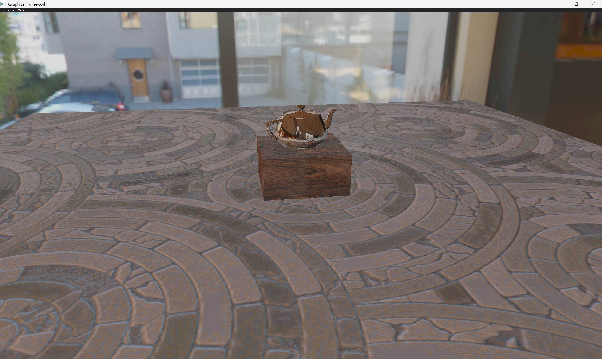
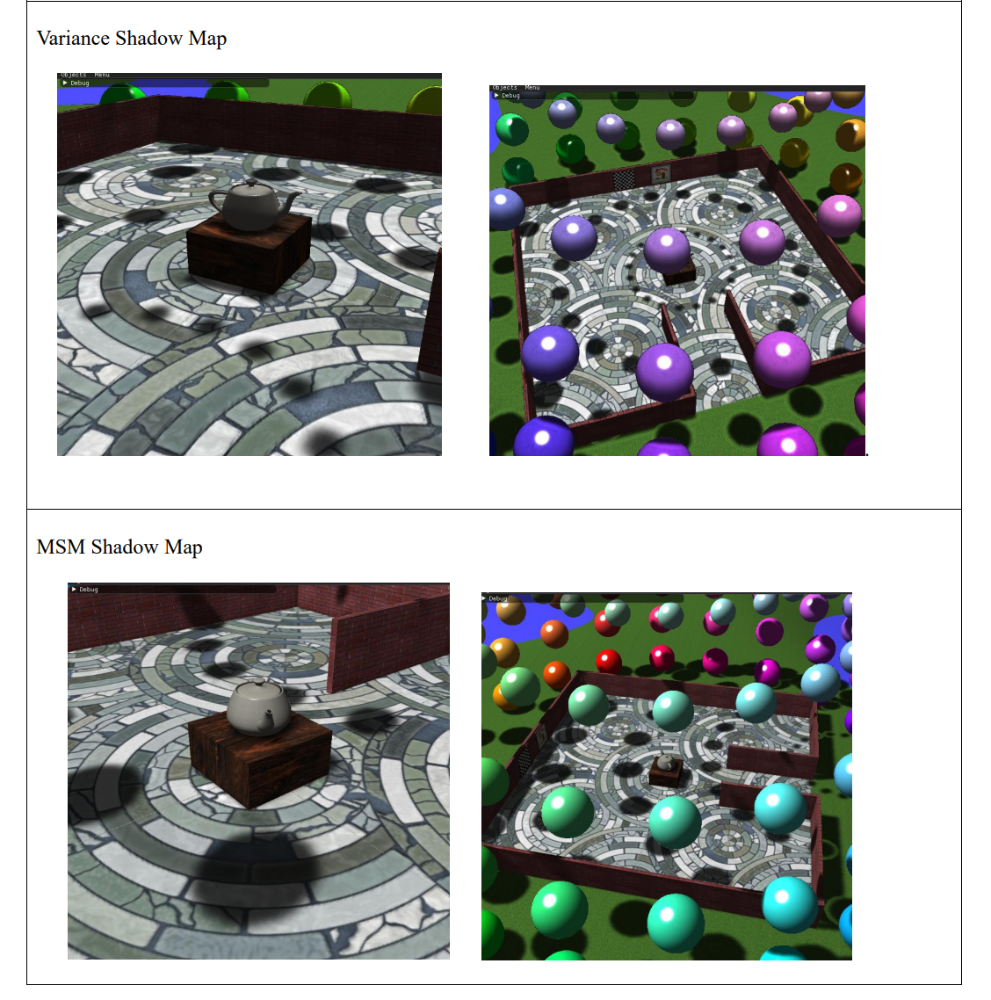

Master of Science in Computer Science
DigiPen Institute of Technology
Coursework: C++, OpenGL rendering, machine learning
Graphics programmer · Real-time rendering
I recently completed an M.S. in Computer Science at DigiPen Institute of Technology (2026), specializing in real-time rendering, and I am applying to PhD programs in computer graphics. My graduate work includes physically based shading, HDR image-based lighting, deferred shading, moment shadow mapping, and screen-space ambient occlusion in C++, OpenGL, and GLSL.
Before graduate school, I spent three years as a professional game developer, building and shipping 2D and 3D mobile games in Unity and C#. I then spent more than five years as an Assistant Professor, teaching game programming and mentoring student teams from concept to finished product, which shaped how I explain technical ideas clearly.

A C++/OpenGL rendering pipeline with a physically based microfacet BRDF, normal mapping, dual-paraboloid reflections, shadow mapping, and HDR image-based lighting.
C++ · OpenGL · GLSL · PBR
Details →
A deferred shading pipeline supporting many dynamic local lights, with Moment Shadow Mapping, spherical-harmonic IBL, and SSAO with bilateral filtering.
C++ · OpenGL · Deferred Shading · SSAO
Details →DigiPen Institute of Technology
Coursework: C++, OpenGL rendering, machine learning
Jawaharlal Nehru Architecture and Fine Arts University, India